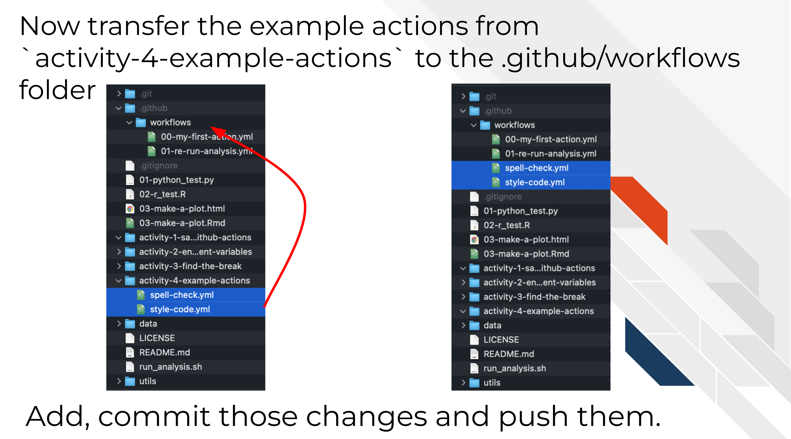
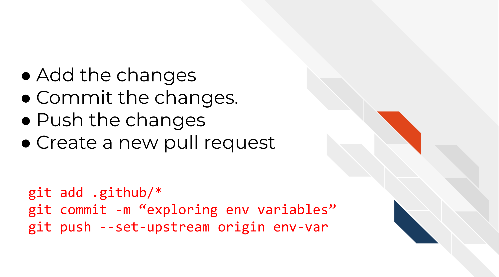

Chapter 8 Applying GitHub Actions Examples

A great way to learn GitHub Actions is to borrow a yaml file someone else has written and incorporate it into your own project. In this chapter we will introduce you to two GitHub Actions and encourage you to adapt one or both of them to one of your own projects. We encourage you to follow these similar steps and tips for other actions that are written on the internet that you may find that you can use for your project.
The two action examples we have in this chapter both work on pull_request triggers and do the following:
- Spell checks markdown and R Markdown files and saves the spelling errors in a file uploaded to GitHub .
- Style R code and commit it back to a branch. This option will take more work to adapt if you do not use R but is totally doable and we’ll walk you through some guidance on how to adapt it.
8.1 Explore the actions
- To get a sense of how these actions work, you guessed it, we are once again going to create a new branch and open a pull request.
 From command line:
From command line:
`git checkout -b "example-ghas"`- For this exercise we are going to copy over a second GitHub Action YAML file from the folder. This time, move the
spell-check.ymlandstyle-code.ymlfiles to your.github/workflowsdirectories.
 From command line:
mv activity-4-sample-github-actions/* .github/workflows/- Now follow the same set of steps we used in the previous chapter to Add, Commit, Push the changes.
 From command line:
git add .github/*
git commit -m "adding even more ghas"
git push --set-upstream origin example-ghasNow create a pull request with the changes you just made.
On your pull request page on GitHub, click on the Details button next to each of these workflow runs. Before moving on to the next section, take a look at the logs and yaml files and practice getting an idea of what these GitHub Actions are doing.

8.1.1 Diving deeper
In this section, we’ll give you the basic recipe of these GitHub Actions. Hopefully by having a basic idea of what is in these actions you’ll be able to adapt them for your own purposes.
8.1.1.1 Spell Check Overview
We’ll run through the yaml file and explain the basic set up here. We also have included links about the resources used at each step. We encourage you to poke around with these resources and with this yaml file to really learn about what these actions are doing.
spell-check:
runs-on: ubuntu-latest
# We will run this on a Docker image so it has most of the things we need
container:
image: rocker/tidyverse:4.0.2We’re using a Docker image that has some R packages we will use so we don’t have to install everything individually: rocker/tidyverse:4.0.2
# Need to get the files specific to our branch from our pull request
- uses: actions/checkout@v3
with:
ref: ${{ github.event.pull_request.head.ref }}Checking out the files we need using actions/checkout@v3
# Our docker image doesn't have this one package though so we'll install it
- name: Install packages
run: Rscript -e "install.packages('spelling')"Install a spelling package we need that wasn’t on the Docker image already. This is a reasonable strategy if we only need one or two packages that don’t take long to install.
- name: Run spell check
id: spell_check_run
run: |
sp_chk_results=$(Rscript "utils/spell-check.R")
# This is where we are going to store output from this step to the environment so we can retrieve it in a later step
echo "sp_chk_results=$sp_chk_results" >> $GITHUB_OUTPUT
cat spell_check_results.tsvRun custom spell check script – this is where you’d really have to personalize this. We’re calling this custom R script that looks for the R Markdown and markdown files and spell checks them. Note that this means this script must be available to this GitHub Action if you are to use it. You’ll either need to download it or add it to whatever repo you add this to.
We also have this print out the results in the log and save these results to the GITHUB_OUTPUT variable as discussed in the previous chapter. This allows us to retrieve the number of misspellings identified in a future step.
# We want to retrieve this file after this runs so we can see what spell check errors were detected
- name: Archive spelling errors
uses: actions/upload-artifact@v3
# These arguments underneath `with` are generally action specific so we have to check the documentation: https://github.com/marketplace/actions/upload-a-build-artifact
with:
name: spell-check-results
path: spell_check_results.tsvArchive spelling errors using actions/upload-artifact@v3. For Archived files, we can see them by going to Summary on the left side of the log page and scrolling down to the Artifacts section. This file we uploaded will tell us the spell check error our script detected.
# If there are too many spelling errors, this will stop the workflow
- name: Check spell check results - fail if too many errors
# Here we are only going to through an error if there's more than 3 spell check errors detected
if: ${{ steps.spell_check_run.outputs.sp_chk_results > 3 }}
run: exit 1We’ve discussed in previous chapters about conditional statements and using GitHub variables. Here we are using a conditional statement that will fail this GitHub Action if there are too many spelling errors (which here we’ve said is 3).
8.1.1.2 Style Code Overview
Just as we did with the spell check action, we’ll run through the yaml file and explain the basic set up here. We also have included links about the resources used at each step. We encourage you to poke around with these resources and with this yaml file to really learn about what these actions are doing.
style-code:
runs-on: ubuntu-latest
# This image has R and basic R packages
container:
image: rocker/tidyverse:4.0.2We’re using a Docker image that has some R packages we will use so we don’t have to install everything individually: rocker/tidyverse:4.0.2
# Need to get the files specific to our branch from our pull request
- name: Checkout files
uses: actions/checkout@v3
with:
ref: ${{ github.event.pull_request.head.ref }}We need this files in this repo. So we are checking out the files we need using actions/checkout@v3.
# Our docker image doesn't have this one package though so we'll install it
- name: Install packages
run: Rscript -e "install.packages('styler')"Install a styler package we need that wasn’t on the Docker image already. This is a reasonable strategy if we only need one or two packages that don’t take long to install.
# Here's the main thing we are running: styling R file code
- name: Run styler on Rmd and R files
run: Rscript -e "styler::style_file(list.files(pattern = 'Rmd$|R$', recursive = TRUE, full.names = TRUE));warnings()"Run a code styling command – this is where you’d need to customize this step. For example, if you wish to style Python code, you may look into this pycodestyle GitHub Action or perhaps other GitHub marketplace actions for your particular languages and needs.
# We will automatically commit back our styled R files
- name: Commit styled files
run: |
# Some config set up to establish creds
git config --global --add safe.directory $GITHUB_WORKSPACE
git config --global user.email "itcrtrainingnetwork@gmail.com"
git config --global user.name "jhudsl-robot"
# Now commit the styled files
git add \*.Rmd
git add \*.R
git commit -m 'Style R files' || echo "No changes to commit"
git push origin || echo "No changes to commit"In this step we are immediately merging any changed files that were styled back to the original branch that this pull request was on.
The || allow these steps an alternative if there are no changes to commit. Without the || the action would break if the styling did not result in changes.
What you’ll need to change here is the git config steps to use your own credentials. (aka git config --global user.email "itcrtrainingnetwork@gmail.com" should be your email).
8.1.2 Tips for adapting these to your own repository
Here’s how you can adapt these to your own repository.
First, you’ll want to add them to your own repository with a pull request. These actions will both be triggered by a pull request so you won’t need to edit them at all to start developing them to adapt them to your project needs.
Note that for the spell check action, if you are deciding to use the customized script we included, you will need to copy that to the same file path as called in this action.
Besides the points of customization you may need to work on that we discussed; you may also need to edit the Docker images used depending on what steps and uses you need.
From here, its basically good luck! Take it one troubleshooting tactic at a time, Google your problems and look for GitHub Action marketplace actions that fit your needs. Best of luck!